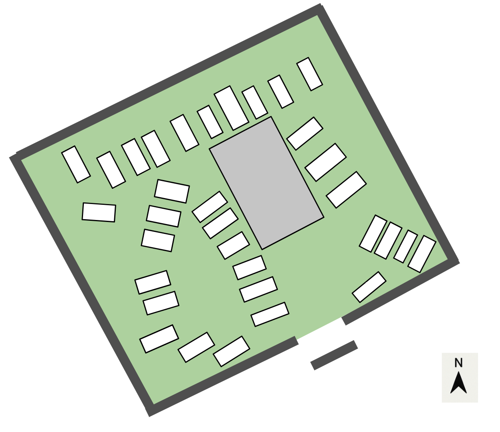

Sélectionne une tombe sur le plan pour consulter les informations connues et voir sa reconstitution lorsqu’elle est disponible.
PLAN PATRIMONIAL · SANS GPS
Plan du cimetière
Toucher un repère
100 %

Épitaphe transcrite Informations d’archives Inscription disparue Information inconnue Attribution incertaine
Seules les tombes disposant d’un nom ou d’une identité proposée sont listées ici.
Le plan schématique est conservé tel que fourni. Le repère A désigne l’ossuaire. La pyramide B n’est pas placée car son emplacement exact n’est pas défini dans le schéma.
Base de données : classeur récapitulatif mis à jour fourni pour cette version. Les données de transcription, archives, nationalité et vérification sont reprises telles quelles ; les cellules vides sont signalées comme non renseignées. Les drapeaux suivent la colonne « Nationalité validée », lorsqu’elle contient France ou Espagne.